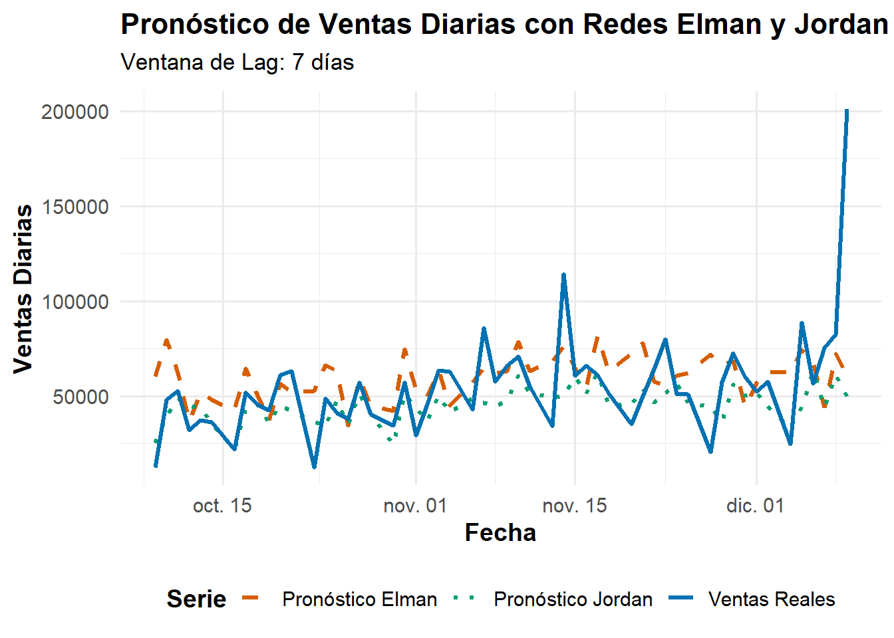

7 Redes Neuronales Recurrentes (RNN) para Series de Tiempo
Las Redes Neuronales Recurrentes (RNN) son arquitecturas de redes neuronales diseñadas para procesar datos secuenciales, como series de tiempo, gracias a sus conexiones de retroalimentación que les otorgan una “memoria” del pasado. Esta capacidad las hace ideales para tareas de pronóstico.
Entre las RNN más fundamentales se encuentran las redes Elman y Jordan:
Red Elman (Simple Recurrent Network - SRN): Esta arquitectura añade una “capa de contexto” a una red feedforward. Las activaciones de la capa oculta en un paso de tiempo se retroalimentan a esta capa de contexto, que sirve como entrada adicional para la capa oculta en el siguiente paso. Esto permite a la red mantener un resumen del historial reciente de la secuencia.
Red Jordan: A diferencia de Elman, la red Jordan retroalimenta las activaciones de la capa de salida a una capa de estado, la cual se introduce como entrada en la siguiente iteración. Esto significa que la red “recuerda” sus propias predicciones pasadas.
Ambas redes son cruciales para comprender la recurrencia y serán aplicadas en este análisis para pronosticar las ventas diarias.
Para implementar estas redes en R, utilizaremos el paquete RSNNS (Recurrent Self-Organizing Map Neural Networks) que proporciona implementaciones de varias arquitecturas de redes neuronales, incluyendo Elman y Jordan.
7.1 Preparación y Transformación de Datos
Las redes neuronales RNNs requieren que los datos estén en un formato específico y escalados:
Las redes neuronales son sensibles a la escala de los datos de entrada. La serie original de ventas diarias (TotalSales) fue transformada utilizando el logaritmo natural (log(TotalSales)). Esta transformación contribuye a estabilizar la varianza de la serie y a linealizar la tendencia, lo cual es beneficioso para el entrenamiento de redes neuronales.
Se definió una lag_window de 7 días para crear las secuencias de entrada y salida, lo que significa que los 7 valores y_scaled anteriores se utilizan como entrada para predecir el valor y_scaled del día siguiente.
La variable y_log fue normalizada a un rango de [0, 1] utilizando una normalización Min-Max manual, basándose en los valores mínimos y máximos de y_log del conjunto de datos completo.
Las secuencias generadas se dividieron en conjuntos de entrenamiento y prueba para evaluar el rendimiento del modelo en datos no vistos. Se reservaron las últimas 60 secuencias (correspondientes a los últimos 60 días de la serie original) para el conjunto de prueba.
7.2 Configuración y entrenamiento de los modelos
Ambas redes fueron implementadas utilizando el paquete RSNNS en R.Se configuró una única capa oculta con size = 10 neuronas. El número máximo de iteraciones (maxit) se estableció en 2500 para permitir que las redes tuvieran suficientes épocas para aprender. Para el algoritmo de aprendizaje, al especificar solo los parámetros de aprendizaje (learnFuncParams), RSNNS utiliza por defecto “Std_Backpropagation” (Backpropagation estándar).
Para la red Elman, learnFuncParams se estableció en c(0.3, 0.5) representando tasa de aprendizaje y momento. Para la red Jordan, learnFuncParams se estableció en c(0.1) (tasa de aprendizaje). Se utilizó linOut = TRUE para la capa de salida, apropiado para problemas de regresión. Para asegurar la reproducibilidad de los resultados, se estableció una semilla (set.seed(123)) antes de cada entrenamiento de modelo.
Inicialmente, el entrenamiento de las redes Elman y Jordan en RSNNS generó persistentes avisos sobre “ciclos topológicos” en la red, incluso al especificar el tamaño de la capa oculta como un vector (size = c(5)). Este comportamiento sugería un problema en la interpretación de la arquitectura por parte de la librería.
una vez realizadas las correcciones respectivas, los avisos de ciclos en la red desaparecieron y el proceso de entrenamiento se ejecutó sin incidencias, permitiendo a las redes converger y aprender de manera efectiva.
7.3 Generación de Predicciones y Evaluación
Los modelos Elman y Jordan generaron predicciones para el conjunto de prueba en la escala normalizada. Estas predicciones fueron posteriormente desnormalizadas a la escala logarítmica original y, finalmente, deslogaritmizadas (aplicando la función exponencial exp()) para obtener los pronósticos en la escala original de ventas. Se calcularon las métricas de rendimiento clave, RMSE y MAE, tanto en la escala logarítmica como en la escala original, para una evaluación integral del desempeño de cada modelo.
Las métricas de rendimiento obtenidas para las redes Elman y Jordan en el conjunto de prueba, una vez que las predicciones fueron desnormalizadas y deslogaritmizadas correctamente, son las siguientes:
##
## --- Dataframe preparado para NN (primeras filas) ---## # A tibble: 6 × 2
## ds y_log
## <date> <dbl>
## 1 2009-12-01 10.9
## 2 2009-12-02 11.1
## 3 2009-12-03 11.2
## 4 2009-12-04 10.6
## 5 2009-12-05 9.19
## 6 2009-12-06 10.1##
## Estructura del dataframe preparado para NN:## tibble [604 × 2] (S3: tbl_df/tbl/data.frame)
## $ ds : Date[1:604], format: "2009-12-01" "2009-12-02" ...
## $ y_log: num [1:604] 10.91 11.06 11.21 10.61 9.19 ...
## NULL##
## Rango de y_log antes de la normalización:## Min y_log: 8.148188## Max y_log: 12.21075##
## --- Dataframe con columna 'y_scaled' (primeras filas) ---## # A tibble: 6 × 3
## ds y_log y_scaled
## <date> <dbl> <dbl>
## 1 2009-12-01 10.9 0.679
## 2 2009-12-02 11.1 0.716
## 3 2009-12-03 11.2 0.754
## 4 2009-12-04 10.6 0.607
## 5 2009-12-05 9.19 0.257
## 6 2009-12-06 10.1 0.483## Rango de y_scaled: 0 1##
## --- Dimensiones de las secuencias para la red neuronal ---## Dimensiones de las entradas (filas, columnas = lag_window): 597 x 7## Dimensiones de las salidas (filas, 1): 597 x 1##
## --- División de datos (secuencias) ---## Longitud del conjunto de entrenamiento (secuencias): 543## Longitud del conjunto de prueba (secuencias): 54## Fechas del conjunto de prueba: 15256 a 15317##
## --- Entrenando Red Elman ---##
## --- Depuración de Valores Desnormalizados (Elman) ---## Primeros valores de predicciones (escala log):## [,1]
## [1,] 11.00687
## [2,] 11.28703
## [3,] 11.03812
## [4,] 10.51130
## [5,] 10.86182
## [6,] 10.77981## Primeros valores reales del test (escala log):## [,1]
## [1,] 9.435434
## [2,] 10.783927
## [3,] 10.869957
## [4,] 10.378456
## [5,] 10.530660
## [6,] 10.500885##
## Métricas Red Elman (escala logarítmica):## RMSE: 0.4873## MAE: 0.3362##
## Métricas Red Elman (ESCALA ORIGINAL DE VENTAS):## RMSE: 27516.9## MAE: 17980.36##
## --- Entrenando Red Jordan ---##
## Métricas Red Jordan (escala logarítmica):## RMSE: 0.3992## MAE: 0.2902##
## Métricas Red Jordan (ESCALA ORIGINAL DE VENTAS):## RMSE: 26908.25## MAE: 15437.16 La Red Jordan mostró unas métricas consistentemente más bajas que las de la Red Elman. Específicamente, en la escala logarítmica, Jordan obtuvo un RMSE de 0.3992 y un MAE de 0.2902, mientras que Elman registró un RMSE de 0.4873 y un MAE de 0.3362. Esta ventaja se mantuvo en la escala original, donde Jordan alcanzó un RMSE de 26,908.25 y un MAE de 15,437.16, superando a Elman con un RMSE de 27,516.90 y un MAE de 17,980.36.
La Figura muestra visualmente el desempeño de las redes Elman y Jordan frente a las ventas reales en el conjunto de prueba. Se observa que ambas redes logran capturar la tendencia general y la estacionalidad semanal de la serie de ventas. La red Jordan (línea punteada verde) parece seguir de cerca la serie real (línea sólida azul) en varios puntos, evidenciando una buena capacidad de adaptación al patrón de las ventas. El pronóstico de Elman (línea punteada naranja) también muestra un seguimiento razonable.
7.4 Conclusiones
En general, estos resultados confirman que las redes Elman y Jordan, a pesar de ser arquitecturas clásicas de RNN, siguen siendo válidas para el modelado y pronóstico de series de tiempo, especialmente aquellas con patrones estacionales y tendencias.
No obstante, para capturar variaciones que no son puramente temporales, es fundamental considerar la integración de variables exógenas como días festivos, promociones específicas, eventos especiales o cambios de precios que pueden tener un impacto significativo en las ventas. Incluir esta información como entradas adicionales a las redes neuronales permitiría a los modelos aprender y pronosticar con mayor precisión las fluctuaciones o picos que van más allá de los patrones de tendencia y estacionalidad propios de la serie.